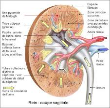

La physiologie de l'appareil urinaire
Les fonctions du rein
- Fonction
endocrine :
- Secretion de la renine : regulation de
la pression arterielle.
- Secretion de l'erythropoeetine.
- Transformation de la vitamine D dans sa
forme active.
- Fonction
exocrine :
- Production d'urine.
- Elimination
des dechets.
- Maintien
de la constante du milieu interieur :
- Equilibre hydrique.
- Equilibre hydro-electrolytique.
- Equilibre acido-basique.

La secretion de la renine
Toute
diminution de la pression arterielle ou veineuse, entraene une
insuffisance de l'irrigation arterielle du rein (ischemie renale), et
provoque la secretion par le rein de la
renine.
La renine joue un rele dans la regulation de la pression arterielle.
Liberee dans le sang circulant, elle reagit avec une substance contenue
dans le plasma, l'angiotensinogene, synthetisee par le foie, afin de
permettre la secretion de l'angiotensine II.
L'angiotensine II a deux proprietes
fondamentales :
- Vasoconstriction : elle augmente donc la
pression arterielle.
- Augmente la secretion de l'aldosterone.
L'aldosterone est une hormone qui augmente la reabsorption d'eau et de
sodium et l'elimination urinaire du potassium.
La secretion de l'erythropoeetine
Le rein
produit et libere une substance, l'erythropoeetine. Celle-ci stimule
l'elaboration des globules rouges par les organes hematopoeetiques. Sa
secretion est declenchee par l'hypoxie.
La transformation de la vitamine D dans
sa forme active
La
vitamine D subit une transformation en forme active au niveau du rein
sous l'action d'une hormone, l' 1-alpha-hydroxylase, secretee par le
tube du glomerule. On constate une diminution de la vitamine D, une
demineralisation.
La production d'urine
L'urine
est un liquide jaune ambre, d'odeur speciale, de reaction en general
acide, de densite de 1,020.
Le rein
elimine en les concentrant certains elements du sang, cette elimination
est selective puisque le rein retient, sans les eliminer, d'autres
elements (protides), enfin, le rein a des fonctions de synthese puisque
l'urine contient des elements que l'on ne trouve pas dans le sang et
qui ne peuvent avoir ete fabriques que par le rein.
La miction
La miction
est l'evacuation des urines declenchee par vendange de la vessie.
Le
deroulement de la miction normale est sous la dependance du systeme
nerveux.
Innervation de la vessie
- Centres vesicaux : peuvent assurer
l'autonomie de la vessie.
- Centres medullaires : ferment le
sphincter lisse et donc, permet le remplissage et la retention d'urine.
- Centres nerveux cerebraux : permet le
declenchement volontaire de la miction.
La continence
La
continence est la possibilite de retenir ses urines assuree par un
double sphincter qui entoure l'uretre posterieur :
- Un sphincter lisse.
- Un sphincter strie soumis a la volonte.
Les mecanismes de la secretion urinaire
- La filtration glomerulaire.
- La reabsorption tubulaire.
- L'excretion tubulaire.
La filtration glomerulaire
La
filtration glomerulaire est la filtration de sang pendant son passage
dans la pelote capillaire du glomerule ce qui produit l'urine primitive
ou filtrat glomerulaire.
Le debit
urinaire du glomerulaire etant de 180 litres/24h, il existe une
reabsorption.
La reabsorption tubulaire
La
reabsorption tubulaire est un processus qui vise a reabsorber certains
constituants de l'urine primitive faisant passer le volume du filtrat
de 180 litres/24h a 1,5 litre/24h.
La reabsorption tubulaire s'effectue selon deux processus :
- Un processus passif, n'exigeant aucun
travail cellulaire mais qui depend des pressions et des concentrations.
- Un processus actif impliquant un travail
cellulaire sous la dependance de reactions enzymatiques avec un taux
maximal de reabsorption.
L'excretion tubulaire
L'excretion tubulaire est l'excretion de ce qui est etranger e
l'organisme par les cellules des tubes. A ceci s'ajoute les ions H+ et
les ions ammonium secreter par le metabolisme des cellules des
tubes.
| e Docteur Richard
Martzolff Encyclopedie medicale Vulgaris
|
L'elimination des dechets
Les
dechets solubles de l'organisme (uree, acide urique, creatinine,
glucose) sont elimines par le rein qui les concentre.
Le glucose
filtre au niveau du glomerule est totalement reabsorbe au niveau du
tube proximal a condition que la glycemie ne depasse pas 8,8 mmol/L, la
glycosurie depend donc de la glycemie.
L'equilibre hydrique
Le rele du
rein dans l'elimination de l'eau est fondamental puisqu'il maintient
stable le capital hydrique de l'organisme, que se soit la
deshydratation ou l'hypovolemie.
L'elimination de l'eau se fait sous la dependance d'une hormone,
l'hormone antidiuretique (ADH) qui agit au niveau du tube contourne
distal et du tube collecteur en rendant selectivement les parois
permeables a l'eau.
Toute
restriction hydrique entraene la secretion de l'ADH, ce qui eleve la
permeabilite des parois du tube collecteur, d'oe une resorption accrue
d'eau et une diurese reduite.
L'equilibre hydro-electrolytique
Le rein
regle l'elimination de toutes les substances minerales et ainsi,
maintient constante la composition ionique du plasma.
Le sodium
a sa reabsorption contreler par l'aldosterone qui retient le sodium et
l'eau en favorisant l'elimination dans l'urine du potassium.
Le
potassium filtre est totalement reabsorbe par le tube proximal. Le
potassium elimine dans l'urine est secrete par le tube distal oe il est
echange ion pour ion avec le sodium. L'aldosterone stimule l'excretion
du sodium.
L'equilibre acido-basique
Le
metabolisme cellulaire aboutit a la formation continuelle d'acides. Le
rele du rein est d'eliminer l'exces d'acides tout en epargnant le
capital basique de l'organisme.
Le
maintient d'un pH normal est possible grece a trois mecanismes :
- La secretion d'ions H+ acides echanges
contre du sodium (ions alcalins).
- La reabsorption des bicarbonates
alcalins.
- La secretion d'ions ammoniums permettant
l'elimination des acides forts sous forme de sels d'ammonium.